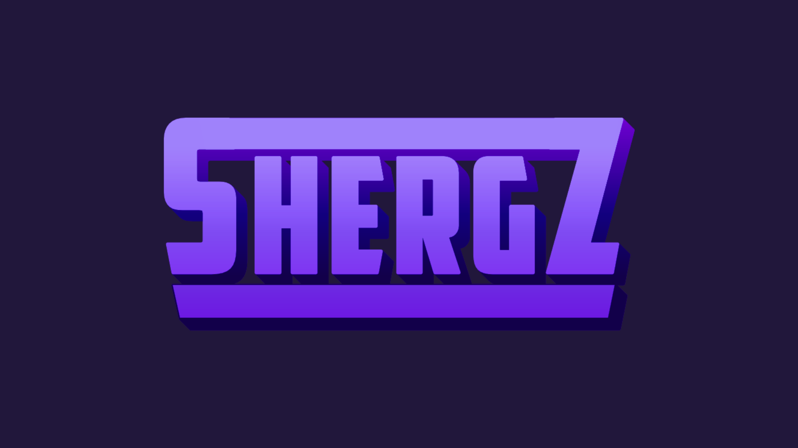
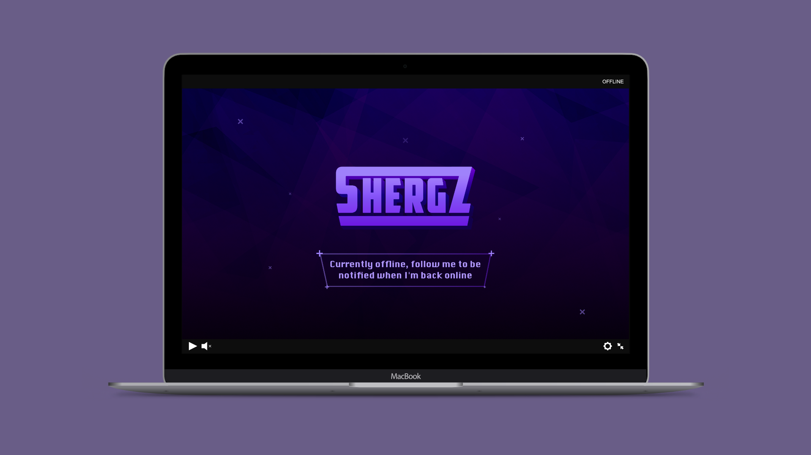
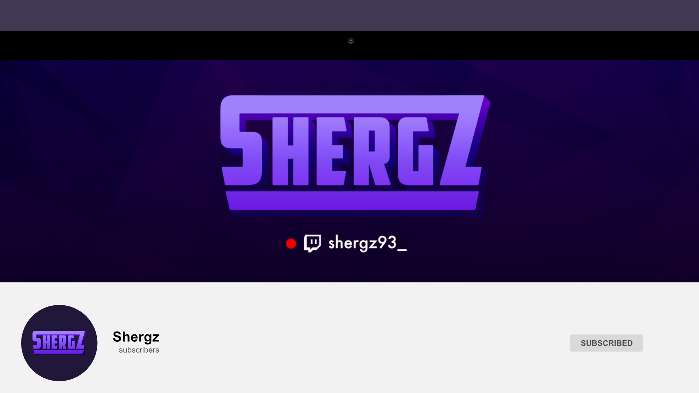

Shergz Logo & Branding
Shergz is a gaming YouTuber and Twitch Streamer. The goal here was to create a strong bold logo that was not too serious and playful. The colour palette for the logo and branding required shades of purple. Assets for Twitch and YouTube were also created including animated the logo.

